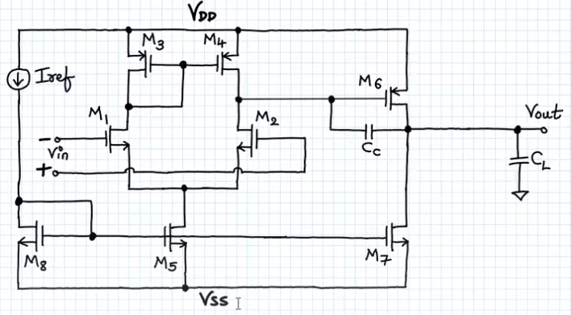
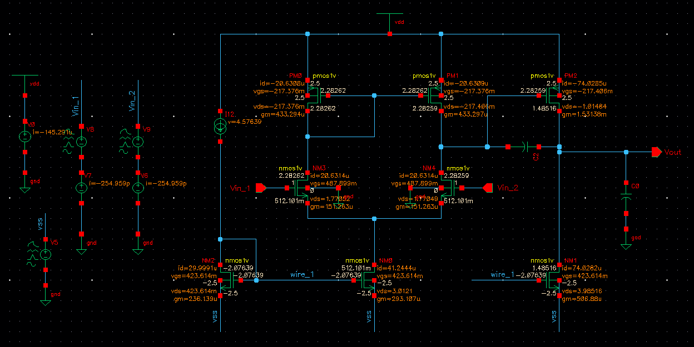
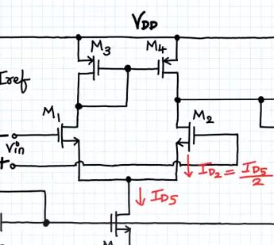
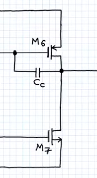
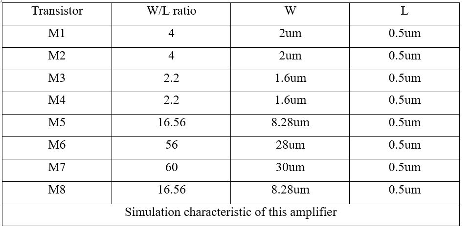
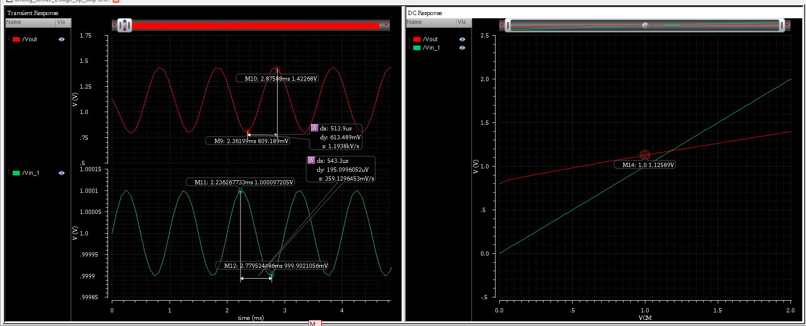
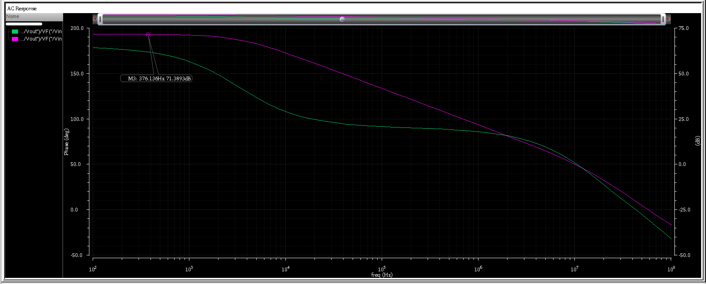
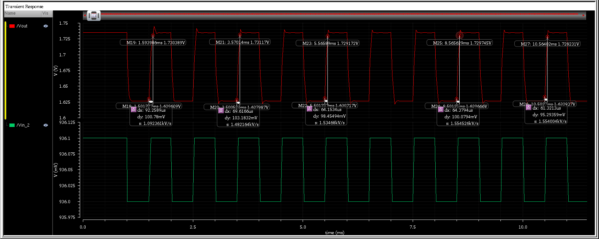
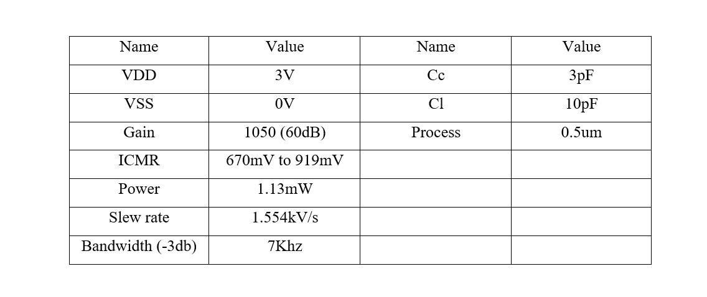

Two-Stage CMOS Operational Amplifier
Design, Analysis, and Simulation using 0.5nm CMOS Technology
This project presents the full custom design of a two-stage CMOS operational amplifier (OTA) using 180nm technology. The work includes schematic creation, layout design, AC & transient simulations, gain and slew rate calculation, and physical verification.
Block Diagram
The design of the two-stage amplifier aims to meet specific performance metrics tailored for general-purpose applications in a 0.5μm CMOS process technology. These target specifications ensure the amplifier achieves high gain, adequate bandwidth, and stability while maintaining low power consumption, aligning with the requirements for analog integrated circuits in this technology node. The key target specifications are defined as follows: Gain, gain bandwidth, settling time, slew rate, ICMR, CMRR, PSRR, output swing, output resistance, offset noise.
Layout View
Design Equations
First Stage Gain
$$A_{v1} = -g_{m2} \cdot (r_{o2} \parallel r_{o4})$$
$$r_{o2} = \frac{1}{\lambda_2 I_{D2}}, \quad r_{o4} = \frac{1}{\lambda_4 I_{D4}}, \quad I_{D2} = I_{D4}$$
$$r_{o2} \parallel r_{o4} = \frac{1}{I_{D2} (\lambda_2 + \lambda_4)} = \frac{2}{I_{D5} (\lambda_2 + \lambda_4)}$$
$$A_{v1} = -2g_{m2} \cdot \left( \frac{1}{I_{D5} (\lambda_2 + \lambda_4)} \right)$$
Second Stage Gain
$$A_{v2} = -g_{m6} \cdot (r_{o6} \parallel r_{o7})$$
$$r_{o6} = \frac{1}{\lambda_6 I_{D6}}, \quad r_{o7} = \frac{1}{\lambda_7 I_{D7}}, \quad I_{D6} = I_{D7}$$
$$r_{o6} \parallel r_{o7} = \frac{1}{I_{D6} (\lambda_6 + \lambda_7)}$$
$$A_{v2} = -g_{m6} \cdot \left( \frac{1}{I_{D6} (\lambda_6 + \lambda_7)} \right)$$
Overall Voltage Gain
$$A_v = A_{v1} \cdot A_{v2} = 2g_{m2} \cdot \left( \frac{1}{I_{D5} (\lambda_2 + \lambda_4)} \right) \cdot g_{m6} \cdot \left( \frac{1}{I_{D6} (\lambda_6 + \lambda_7)} \right)$$
Slew Rate
$$SR = \frac{I_5}{C_c}$$
W/L table
Waveform simulation DC
The image above shows us the gain Vout/Vin is equal to 1050 in the left (the transient responses) which is 60dB and the DC response shows us when Vin = 936mV we have Vout = 1.34V.
AC response (bode plot)
This image shows the AC response (bode plot) the max gain is 60dB and -3dB bandwidth is equal to 7Khz.
Waveform Simulation
This image shows the transient response which already contain slew rate value the symbol “s:
Final result
We already go through the design process of designing a two-stage amplifier, the calculation process calculates gm, W/L ratio, current, etc. After that we go to the simulation part in cadence virtuoso to see how our calculation works in simulation tool. And for each calculation we gain different results, it can be good or bad, and we already fix these things that seem not working right when we simulate it, we go all the way to start and reoperate the calculation process again. Finally, we have the result is the two-stage amplifier working on SAT and it has the gain expected.